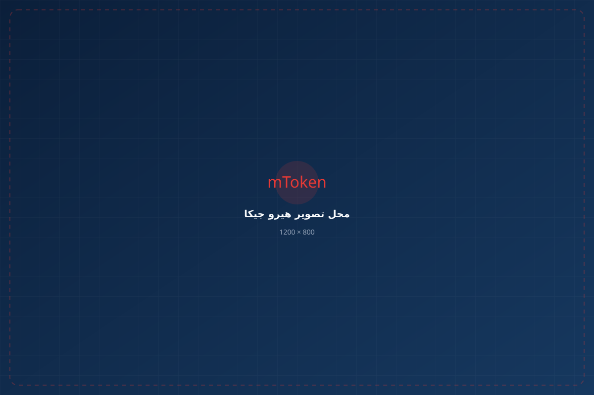
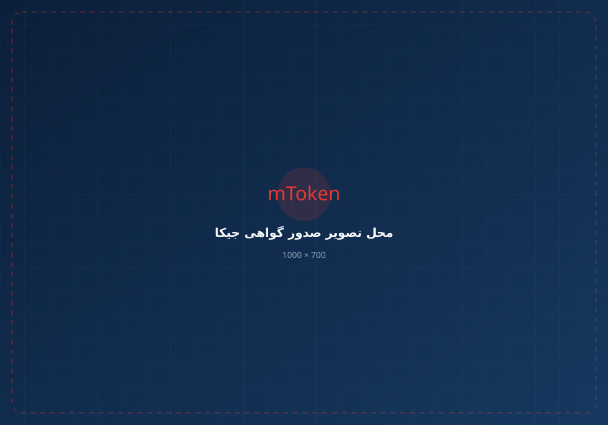

اگر برای دریافت گواهی امضای دیجیتال، ثبت CSR، پیگیری درخواست یا استفاده از گواهی در سامانههای مختلف به جیکا رسیدهاید، از اینجا مسیر مناسب خودتان را پیدا کنید.

جیکا سامانهای برای فرایندهای مرتبط با گواهیهای الکترونیکی است. بسته به نوع گواهی و کاربرد شما، ممکن است بخشی از مراحل به صورت غیرحضوری و بخشی از طریق احراز هویت یا مراجعه به دفتر ثبتنام انجام شود.
اگر برای سامانه مودیان، سامانه ستاد، جامع تجارت یا سایر سامانههای مبتنی بر امضای دیجیتال به گواهی نیاز دارید، ابتدا مشخص کنید گواهی را برای چه کاری میخواهید و آیا توکن سختافزاری در اختیار دارید یا خیر.
برای ورود به بخش متقاضیان گواهی الکترونیکی میتوانید از لینک رسمی سامانه استفاده کنید.
برای ورود و ادامه فرایند، از سامانه رسمی جیکا استفاده کنید. ساختار و گزینههای سامانه ممکن است در طول زمان تغییر کند.
ورود به جیکا ←مسیر کلی دریافت گواهی شامل ثبت اطلاعات، احراز هویت، ثبت درخواست و ادامه فرایند تا دریافت گواهی است.
اطلاعات موردنیاز خود را در سامانه وارد و حساب کاربری ایجاد یا تکمیل کنید.
بسته به نوع درخواست، احراز هویت به صورت غیرحضوری یا از مسیر تعیینشده انجام میشود.
نوع گواهی و روش درخواست را مطابق نیاز خود انتخاب کنید.
پس از تکمیل موفق درخواست، اطلاعات پیگیری درخواست را نزد خود نگه دارید.
در صورت نیاز، مراحل احراز هویت، مراجعه به دفتر یا سایر اقدامات اعلامشده را انجام دهید.
پس از تکمیل فرایند صدور، گواهی را مطابق روش اعلامشده دریافت و در محیط موردنظر استفاده کنید.
اگر هنوز نمیدانید مرحله بعدی چیست، ابتدا وضعیت خودتان را مشخص کنید.
CSR یکی از روشهای متداول درخواست گواهی است و در برخی فرایندها، اطلاعات کلید عمومی و مشخصات درخواست را در اختیار مرکز صدور قرار میدهد.
اگر فایل CSR در اختیار شماست، آن را برای فرایندی که گواهی را برای آن درخواست کردهاید استفاده کنید. محل و روش ثبت CSR به نوع گواهی و سامانه مربوط بستگی دارد.
راهنمای تولید و استفاده از CSR ←در فرایندهای مرتبط با سامانه مودیان، CSR و کلید عمومی میتوانند در مراحل مربوط به دریافت گواهی و شناسه یکتا مورد استفاده قرار گیرند. اگر برای مودیان به CSR نیاز دارید، مسیر اختصاصی آن را دنبال کنید.
راهنمای CSR برای مودیان ←
نوع استفاده از گواهی به سامانه و فرایندی که در آن فعالیت میکنید بستگی دارد.
استفاده از گواهی و امضای دیجیتال در فرایندهای مرتبط با تجارت و ثبت سفارش.
شرکت در مناقصه و مزایده، ثبتنام تأمینکننده و امضای اسناد الکترونیکی.
فرایندهای مرتبط با CSR، گواهی دیجیتال و شناسه یکتا مالیاتی.
استفاده از امضای دیجیتال و توکن در برخی خدمات و فرایندهای بانکی.
استفاده از توکن و گواهی دیجیتال در فرایندهای الکترونیکی مرتبط.
کاربرد گواهی و کلید خصوصی در سامانههایی که از زیرساخت کلید عمومی پشتیبانی میکنند.
اگر برای نگهداری کلید خصوصی و استفاده از امضای دیجیتال به توکن سختافزاری نیاز دارید، میتوانید توکن mToken K3 را تهیه کنید. خرید توکن مستقل از خدمات راهاندازی و صدور گواهی است. یعنی اگر قصد دارید مراحل دریافت گواهی را شخصاً انجام دهید، فقط توکن را سفارش دهید و مراحل گواهی را از مسیر مربوط دنبال کنید.
کد رهگیری را نگه دارید و ادامه مراحل درخواست را مطابق پیامها و وضعیت درخواست در سامانه دنبال کنید.
محل ثبت CSR به نوع گواهی و فرایند مربوط بستگی دارد. ابتدا مشخص کنید گواهی برای کدام سامانه یا کاربرد درخواست شده است.
معمولاً باید زنجیره گواهی، توکن، درایور یا Middleware، مرورگر و تنظیمات موردنیاز سامانه بررسی شود.
خرید توکن بهتنهایی به معنی صدور گواهی نیست. پس از تهیه توکن، باید فرایند دریافت گواهی موردنیاز خود را انجام دهید.
قبل از تکرار چندباره درخواست، مشخص کنید مشکل دقیقاً در کدام مرحله اتفاق افتاده است.
اگر نمیخواهید درگیر ثبت درخواست، احراز هویت و پیگیری مراحل شوید، میتوانید انجام فرایند را به ما بسپارید.
جیکا سامانه مرتبط با فرایندهای گواهیهای الکترونیکی است که متقاضیان میتوانند از طریق آن برای دریافت و پیگیری گواهیهای موردنیاز خود اقدام کنند.
برای ورود به بخش متقاضیان گواهی الکترونیکی میتوانید از لینک رسمی جیکا در ابتدای همین صفحه استفاده کنید.
نوع گواهی و روش درخواست تعیین میکند چه تجهیز یا روشی لازم است. در مواردی که گواهی برای استفاده در توکن سختافزاری درخواست میشود، داشتن توکن موردنیاز است.
خیر. خرید توکن مستقل است. اگر قصد دارید خودتان مراحل دریافت گواهی را انجام دهید، میتوانید فقط توکن را خریداری کنید.
CSR یک درخواست گواهی دیجیتال است که شامل اطلاعات درخواست و کلید عمومی مربوط به جفتکلید است. در برخی فرایندهای دریافت گواهی، CSR برای ثبت درخواست مورد استفاده قرار میگیرد.
گواهی باید در محیط موردنیاز شما مورد استفاده قرار گیرد. بسته به سامانه، ممکن است توکن، Middleware، مرورگر یا تنظیمات خاصی لازم باشد.
گواهی دیجیتال و کلیدهای مرتبط میتوانند در فرایندهای سامانه مودیان مورد استفاده قرار گیرند. الزامات دقیق به نوع فرایند و روش انتخابشده بستگی دارد.
اگر برای دریافت گواهی امضای دیجیتال به جیکا رسیدهاید، ابتدا مسیر موردنیاز خود را مشخص کنید و سپس وارد سامانه رسمی شوید.
ورود به سامانه جیکا ←